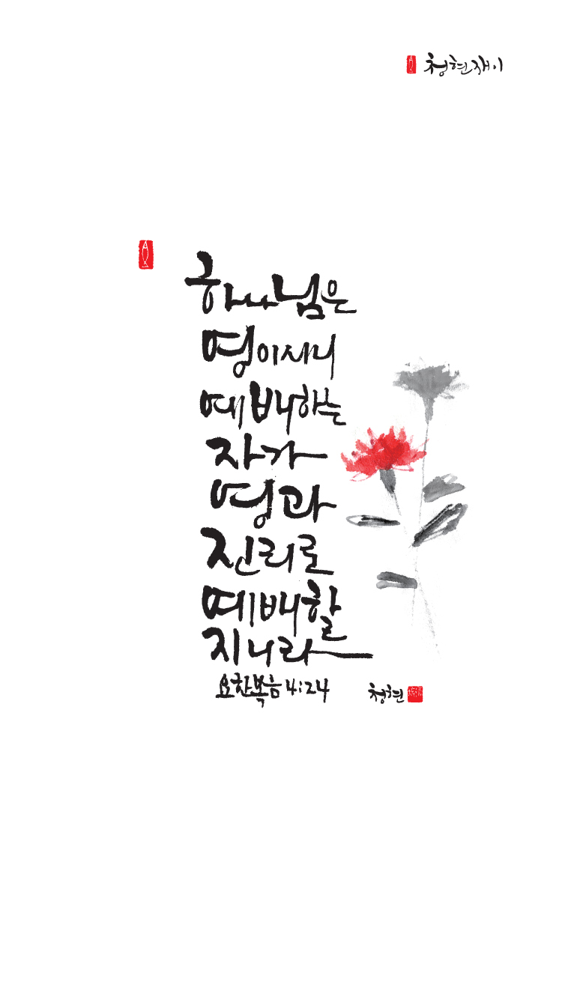

온라인 기도실 안내
2020년 10월04일(일)~10월10일(토)
- 온라인 기도실은 온 회중이 함께 하나님께 나아가는 자리입니다
- 30분 정도 여유를 갖고 하시길 바랍니다
- 말씀과 묵상, 찬양과 기도로 함께 합니다
- 배경 음악이 나올 수 있습니다 볼륨을 조절해주세요
준비가 되셨으면 아래의 버튼을 눌러주세요
찬양, 마음을 열며
- 먼저 찬양의 가사를 천천히 읽어 봅시다
1. 이 세상을 살아가는 동안에
나의 힘을 의지할 수 없으니
기도하고 낙심하지 말 것은 주께서
참 소망이 되심이라
하나님의 꿈이 나의 비전이 되고
예수님의 성품이 나의 인격이 되고
성령님의 권능이 나의 능력이 되길
원하고 바라고 기도합니다
찬양, 마음을 열며
- 먼저 찬양의 가사를 천천히 읽어 봅시다
2. 주의 길을 걸어가는 동안에
세상의 것 의지할 수 없으니
감사하고 낙심하지 말 것은
주께서 참 기쁨이 되심이라
하나님의 꿈이 나의 비젼이 되고
예수님의 성품이 나의 인격이 되고
성령님의 권능이 나의 능력이 되길
원하고 바라고 기도합니다
원하고 바라고 기도합니다
원하고 바라고 기도합니다
찬양, 마음을 열며
원하고 바라고 기도합니다 by 달밤찬양
위의 찬양이 끝나면 말씀읽기를 눌러주시면 됩니다
말씀, 중심을 세우며
오늘의 말씀입니다
음악 소리가 크면 조절하시기 바랍니다
"너 예수께 조용히 나가" 연주 by 황은혜

마음의 묵상(요4:24)
“하나님은 영이시니 예배하는 자가 영과 진리로 예배할지니라”
1. 예배드릴 때 어떤 마음으로 드리시나요?
2. 영과 진리로 예배한다는 의미는 무엇일까요?
3. “예배하는 자”이십니까?
주님만을 예배합니다
회개, 세리의 기도
- 하나님이여 불쌍히 여기소서
나는 죄인이로소이다
지치고 상한 모습 그대로 3분 정도 회개하며 기도합니다
내 중심이 주를 간절히 구하오리니
- 성 어거스틴의 기도
전능하신 하나님 아버지
나의 심령 속에 들어오셔서
하나님 아버지의 사랑으로 채워주소서
오 하나님
나에게 자비를 베푸셔서
하나님이 나와 어떤 관계가 있음을 알게 하시고
나는 너의 구원이라 말씀하여 주시는
음성을 듣게 하여 주옵소서
주여 나의 심령을 맡기오니
그 귀를 여셔서 주님의 음성을 듣게 하옵시고
그 음성만 따라서 살게 하옵소서
간절한 마음으로 3분 정도 기도합시다
하나님 나라
1. 하나님의 나라가 속히 이 땅에 임하게 하소서
하나님 아버지, 오늘도 코로나 치료를 위하여 헌신하고
있는 전 세계의 모든 의료진들에게 새로운 힘을 주옵시고,
백신과 치료제를 개발하고 있는 전 세계의 연구진들에게
하늘의 지혜를 더하사, 온 인류가 하나님의 도우심으로
속히 코로나 바이러스를 극복하게 역사하옵소서.
간절한 마음으로 3분 정도 기도합시다
남과 북
2. 남북한이 속히 복음으로 통일되게 하소서
역사를 주관하시는 하나님 아버지,
동방의 예루살렘이었던 평양에 하나님을 경외하는
새로운 정권이 들어서게 역사하시고, 한반도에서
모든 핵과 생화학 무기들을 제거하여 주옵소서.
그리고 이를 위하여 남북한이 화평케 하는 복음
안에서 대화하게 하시어, 마침내 한반도에 자유와
평화와 통일의 열매가 맺히게 하옵소서.
간절한 마음으로 3분 정도 기도합시다
대한민국
3. 우리나라가 하나님을 경외하는 나라가 되게 하소서
하나님 아버지, 매일 마스크를 쓰면서 그 동안 말로
지은 우리 죄를 되돌아보게 하시고, 사회적 거리를
넓히며 이웃과의 관계의 소중함을 깨닫게 하시고,
멈추어진 모습을 바라보면서 일상의 소중함을
깨닫는 우리 민족이 되게 하소서.
무엇보다 우리 민족이 코로나 사태를 겪으면서
하나님을 소망하게 하시고, 그리하여 우리민족이
하나님을 경외하는 민족이 되게 하소서.
간절한 마음으로 3분 정도 기도합시다
한국교회
4. 한국교회가 성령으로 새롭게 부흥되게 하소서
하나님 아버지, 이번 105차 대한예수교 장로회 총회(통합)가
신사참배를 불법으로 결의했던 27차 총회(1938년)처럼 맘몬과
권력 앞에 또 한 번 무릎 꿇는 “이가봇”(하나님의 영광이 떠남)
총회가 되지 않도록 교회의 지도자들에게 회개의 영을 허락하소서.
모든 잘못된 결정을 바로잡을 수 있도록 성령님! 우리를 도우소서.
간절한 마음으로 3분 정도 기도합시다
주안교회
5. 주안교회가 선교적 삶으로 세상을 섬기고 치유하게 하소서
하나님 아버지, 주안의 성도들이 비록 코로나로 인하여 모두
함께 모여 예배드릴 수는 없지만, 우리가 흩어진 삶의 자리와
우리의 가정들이 성전이 되게 하옵소서.
또한 우리가 삶의 어떤 상황에 놓여 있다 할지라도 그 상황에
몰입되어 하나님 아버지를 향한 우리의 영적 시선을 놓치지
않도록 우리를 도우소서.
간절한 마음으로 3분 정도 기도합시다
감사의 기도
- 오늘 기도를 인도하신 주님께 감사를 올려드립니다
- 아래의 구절을 읽고 주님께 감사의 마음을 올려드립시다
감사로 제사를 드리는 자가 나를 영화롭게 하나니 그의 행위를 옳게 하는 자에게 내가 하나님의 구원을 보이리라
[시편 50장 23절]
고요한 가운데 잠시 침묵하시기 바랍니다
파송, 세상을 향하여
- 오늘의 온라인 기도를 마쳤습니다
기도를 들으신 주님께서 평안히 가라 하십니다
주님께서 우리와 함께 하시니 두려울 것이 없습니다
새벽을 깨우며
- 새벽기도회 안내입니다